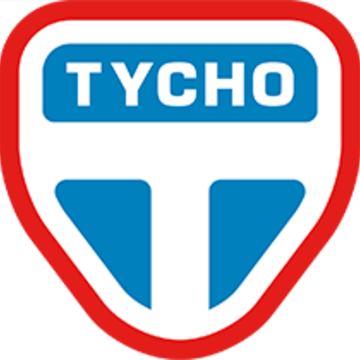

Os Belters vivem em um bom número de planetas anões e luas no Sistema Solar, com populações absolutamente grandes, isso gerou então uma outra nação interplanetária como a Terra (ONU) e Marte (MCR). Abaixo vejamos os locais onde eles habitam.
Ceres é um planeta anão localizado no cinturão de asteróides entre os planetas Marte e Júpiter entre 2,5 e 2,9 UA (Unidade Astrôomica) do Sol. Ele é considerado o maior "asteróide" do Sistema Solar, com um diâmetro de 946 km, uma gravidade de 0,27 km/s, temperatura média de -106 graus Celsius, um dia de nove horas e um ano de 1,682 dias.
Ceres é o principal lugar dos Belters e da OPA, tendo mais de 5,5 milhões de habitantes abaixo de sua superfície, pois a superfície do mesmo serve para a saída e entrada comercial de naves Belters ou da ONU. É nesse mesmo planeta onde existe cidades com céu artificial, pregação de ativistas Belters e estações de ligação para diversos lugares do planeta.
O asteróide Eros ou 433 Eros é um dos asteróides mais conhecidos por cientistas que estudam o espaço, ele está entre 1,8 e 1,13 unidades astronômicas do Sol e possui em média 16,8 km de diâmetro, sua descoberta foi feita no dia 13 agosto de 1898 pelo astrônomo alemão Carl Gustav Witt.
Eros é um local usado para o conserto de naves espacias de diferentes regiões do Sistema Solar, inclusive da Terra e Marte. Nesse mesmo asteróide acredita-se que houve um incidente misterioso. No asteróide Eros moram cerca de 1,5 milhões de Belters, entre trabalhadores e turístas.
A estação Tycho é a maior plataforma de construção móvel do sistema Sol, e a sede da Belt na Tycho Manufacturing and Engineering Concern e, secretamente, a Outer Planets Alliance. É o lar de uma população de mais de 15.000 pessoas.
A Estação Thoth era uma estação de spin privada localizada no Cinturão . Foi usado para pesquisas sobre a protomolécula pela Protogen Corporation.
Os corredores da Estação Thoth eram amplos e espaçosos, com piso alcatifado, longas filas de hera cultivadas em espirais cuidadosamente cuidadas e bonsai iluminados a poucos metros. A iluminação era suave e branca como a luz do sol.
Thoth era um laboratório sombrio de pesquisa e desenvolvimento, de propriedade da Protogen , e foi onde eles secretamente realizaram pesquisas sobre a protomolécula e onde Antony Dresden orquestrou o incidente de Eros . Enquanto Holden, sua tripulação e Joe Miller escapavam de Eros a bordo de Rocinante , o piloto de Holden, Alex Kamal, captou um sinal de saída do navio de Dresden, que também escapou, dando-lhes a localização da Estação Thoth. Fred Johnson, chefe da OPA , ordenou um ataque à estação para chegar ao fundo do que estava acontecendo com Eros.
Rhea, é a quinta lua principal do planeta Saturno . É a segunda maior lua e consiste de um monte de gelo e rocha. A lua é colonizada e possui refinarias de hélio-3.
Tritão é a maior lua de Netuno e a sétima maior lua do sistema Sol.
Os profundos laboratórios de astronomia de Triton são o posto avançado mais distante da humanidade desde os eventos de Leviathan Wakes. Quando os tumultos cresceram em Ceres e em todo o cinturão após a destruição da Canterbury, um grupo de garimpeiros simpáticos à OPA ocupou os laboratórios de astronomia de Triton, transformou a matriz no sistema e transmitiu a localização de todos os navios marcianos da região. sistema.
O LDSS Nauvoo , mais tarde conhecido como OPAS Behemoth e depois Estação Medina , é um navio geracional construído na Estação Tycho . De forma cilíndrica, media pouco mais de dois quilômetros de comprimento e meio quilômetro de largura. Quatro navios de guerra da classe Donnager cabiam em sua barriga e não tocavam nas paredes.
O objetivo era ser povoado por milhares de mórmons e viajar além do sistema Sol até Tau Ceti . No entanto, antes de sua viagem, o navio foi usado pelos membros da Outer Planets Alliance para tentar desviar o curso de Eros durante o incidente de Eros . A tentativa falhou e o navio foi resgatado pelo Drummer, rebatizado como o OPAS Behemoth. Mais tarde, passou por reformas para transformá-lo de um navio de viagem geracional, em um navio de guerra funcional que seria parecido com os da Marinha da República Congressional Marciana e da Marinha das Nações Unidas.
O mapa abaixo retrata o ano de 2354, eo os respectivos locais onde os Belters moram, todos eles estão circulados em preto: